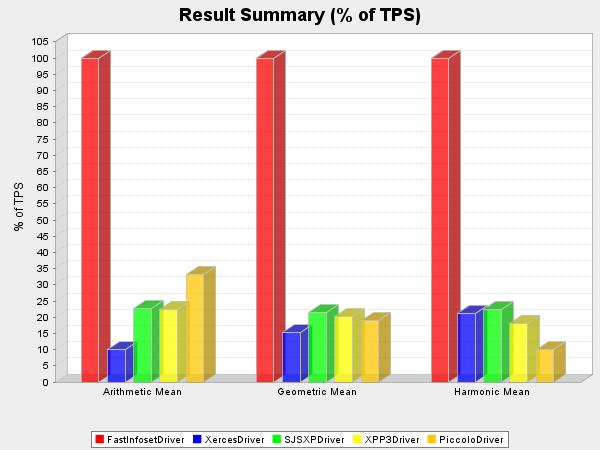
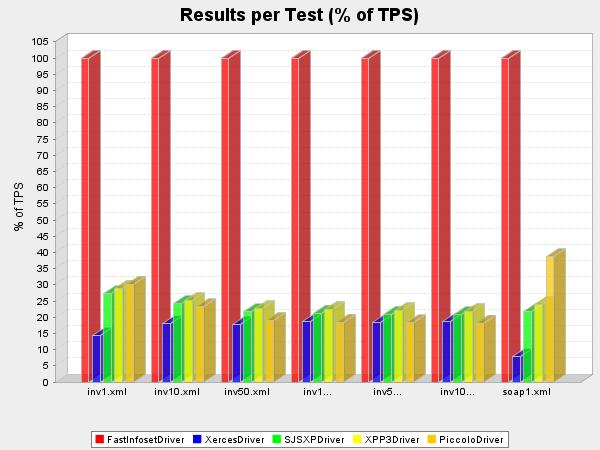
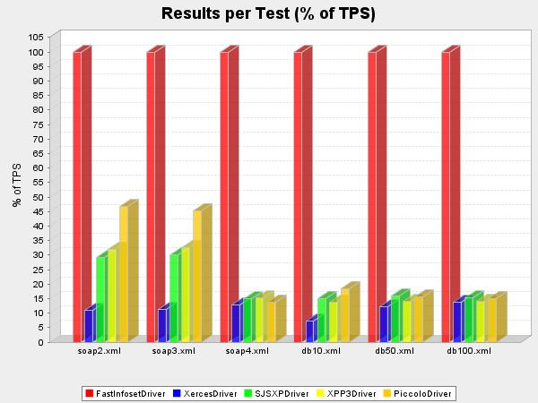
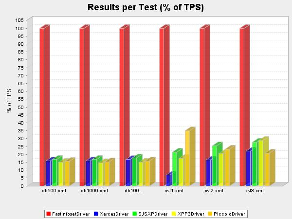
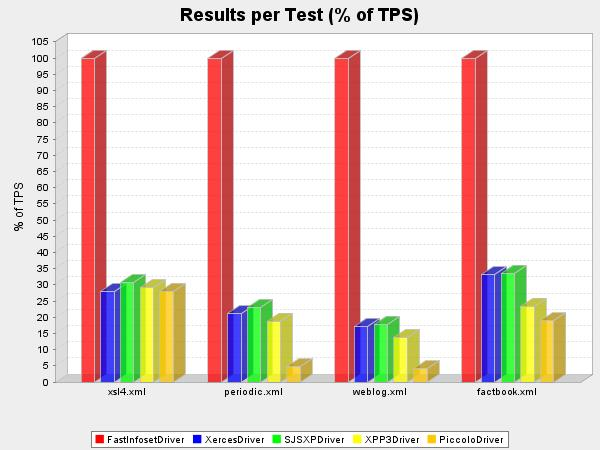

Japex Report: ParsingPerformance
- classPath: lib/../dist/classes
lib/FastInfoset.jar
lib/jsr173_api.jar
lib/jsr173_1.0_ri.jar
lib/xpp3-1.1.3.4.G.jar
lib/Piccolo.jar
lib/sjsxp.jar
- dateTime: 10 Jan 2005/17:36:31 MET
- libraryDir: lib
- numberOfThreads: 1
- osArchitecture: sparc
- osName: SunOS
- resultUnit: TPS
- runTime: 5
- version: 0.1
- vmInfo: Sun Microsystems Inc. 1.5.0_01-b08
- warmupTime: 5
Result Summary
(TPS)
| driver | driverClass | resultAritMean | resultGeomMean | resultHarmMean |
|---|
| FastInfosetDriver | FastInfosetDriver | 8174.07 | 1351.14 | 147.95 |
| XercesDriver | XercesDriver | 810.03 | 206.19 | 31.42 |
| SJSXPDriver | SJSXPDriver | 1855.84 | 290.71 | 33.24 |
| XPP3Driver | XPP3Driver | 1842.44 | 273.11 | 26.89 |
| PiccoloDriver | PiccoloDriver | 2714.89 | 256.86 | 14.67 |

Driver: FastInfosetDriver
| testCase | actualPrepareTime | actualRunIterations | actualWarmupIterations | resultValue | xmlfile |
|---|
| inv1.xml | 166.21 | 41422 | 29958 | 8109.24 | data/inv1.xml |
| inv10.xml | 48.31 | 22289 | 22364 | 4348.22 | data/inv10.xml |
| inv50.xml | 266.41 | 7302 | 7301 | 1422.28 | data/inv50.xml |
| inv100.xml | 578.32 | 3960 | 3966 | 767.89 | data/inv100.xml |
| inv500.xml | 856.32 | 832 | 848 | 162.56 | data/inv500.xml |
| inv1000.xml | 451.02 | 422 | 429 | 82.57 | data/inv1000.xml |
| soap1.xml | 34.60 | 173597 | 173877 | 33832.98 | data/soap1.xml |
| soap2.xml | 21.52 | 123344 | 125140 | 24285.10 | data/soap2.xml |
| soap3.xml | 17.88 | 116162 | 109241 | 22617.21 | data/soap3.xml |
| soap4.xml | 140.17 | 2802 | 2805 | 551.36 | data/soap4.xml |
| db10.xml | 19.60 | 149144 | 149686 | 28870.31 | data/db10.xml |
| db50.xml | 19.26 | 36894 | 35945 | 7221.37 | data/db50.xml |
| db100.xml | 31.75 | 18888 | 17653 | 3720.31 | data/db100.xml |
| db500.xml | 63.49 | 3801 | 3708 | 738.34 | data/db500.xml |
| db1000.xml | 126.07 | 1913 | 1881 | 372.90 | data/db1000.xml |
| db10000.xml | 430.53 | 187 | 182 | 36.18 | data/db10000.xml |
| xsl1.xml | 21.68 | 209307 | 207972 | 40936.24 | data/xsl1.xml |
| xsl2.xml | 26.02 | 36246 | 36323 | 7109.85 | data/xsl2.xml |
| xsl3.xml | 38.23 | 10324 | 10361 | 2026.30 | data/xsl3.xml |
| xsl4.xml | 284.69 | 699 | 695 | 137.11 | data/xsl4.xml |
| periodic.xml | 49.98 | 3135 | 3326 | 609.33 | data/periodic.xml |
| weblog.xml | 525.17 | 142 | 142 | 27.75 | data/weblog.xml |
| factbook.xml | 571.21 | 93 | 92 | 18.13 | data/factbook.xml |
Driver: XercesDriver
| testCase | actualPrepareTime | actualRunIterations | actualWarmupIterations | resultValue | xmlfile |
|---|
| inv1.xml | 21.53 | 5910 | 4755 | 1159.96 | data/inv1.xml |
| inv10.xml | 72.38 | 4008 | 4019 | 779.61 | data/inv10.xml |
| inv50.xml | 181.24 | 1295 | 1318 | 253.18 | data/inv50.xml |
| inv100.xml | 309.61 | 725 | 727 | 142.52 | data/inv100.xml |
| inv500.xml | 1479.83 | 155 | 157 | 29.97 | data/inv500.xml |
| inv1000.xml | 2935.74 | 80 | 79 | 15.36 | data/inv1000.xml |
| soap1.xml | 4.06 | 13329 | 12032 | 2617.64 | data/soap1.xml |
| soap2.xml | 4.48 | 13457 | 13252 | 2650.58 | data/soap2.xml |
| soap3.xml | 4.62 | 13052 | 12249 | 2534.86 | data/soap3.xml |
| soap4.xml | 442.88 | 363 | 363 | 71.27 | data/soap4.xml |
| db10.xml | 7.75 | 10881 | 10795 | 2126.86 | data/db10.xml |
| db50.xml | 36.89 | 4518 | 4516 | 881.22 | data/db50.xml |
| db100.xml | 66.83 | 2633 | 2613 | 516.88 | data/db100.xml |
| db500.xml | 330.04 | 602 | 594 | 117.56 | data/db500.xml |
| db1000.xml | 650.88 | 305 | 307 | 59.86 | data/db1000.xml |
| db10000.xml | 6508.93 | 31 | 31 | 6.08 | data/db10000.xml |
| xsl1.xml | 2.78 | 14681 | 14520 | 2856.23 | data/xsl1.xml |
| xsl2.xml | 27.88 | 6077 | 6051 | 1185.06 | data/xsl2.xml |
| xsl3.xml | 89.27 | 2298 | 2293 | 447.87 | data/xsl3.xml |
| xsl4.xml | 1128.71 | 198 | 179 | 38.44 | data/xsl4.xml |
| periodic.xml | 381.00 | 665 | 664 | 128.98 | data/periodic.xml |
| weblog.xml | 9816.62 | 25 | 25 | 4.79 | data/weblog.xml |
| factbook.xml | 13674.35 | 31 | 31 | 6.02 | data/factbook.xml |
Driver: SJSXPDriver
| testCase | actualPrepareTime | actualRunIterations | actualWarmupIterations | resultValue | xmlfile |
|---|
| inv1.xml | 20.76 | 11246 | 6574 | 2212.04 | data/inv1.xml |
| inv10.xml | 45.88 | 5374 | 5374 | 1054.76 | data/inv10.xml |
| inv50.xml | 167.55 | 1566 | 1559 | 308.03 | data/inv50.xml |
| inv100.xml | 311.93 | 832 | 829 | 163.62 | data/inv100.xml |
| inv500.xml | 1499.25 | 173 | 175 | 33.95 | data/inv500.xml |
| inv1000.xml | 3290.55 | 88 | 87 | 17.16 | data/inv1000.xml |
| soap1.xml | 4.08 | 37471 | 34238 | 7366.03 | data/soap1.xml |
| soap2.xml | 4.45 | 36014 | 34380 | 7087.97 | data/soap2.xml |
| soap3.xml | 5.31 | 34501 | 34231 | 6784.86 | data/soap3.xml |
| soap4.xml | 441.61 | 418 | 418 | 81.98 | data/soap4.xml |
| db10.xml | 7.89 | 22108 | 21785 | 4347.69 | data/db10.xml |
| db50.xml | 34.44 | 5871 | 5888 | 1154.57 | data/db50.xml |
| db100.xml | 69.12 | 2875 | 3080 | 565.06 | data/db100.xml |
| db500.xml | 335.19 | 635 | 630 | 124.73 | data/db500.xml |
| db1000.xml | 672.91 | 321 | 321 | 62.92 | data/db1000.xml |
| db10000.xml | 6598.81 | 33 | 32 | 6.42 | data/db10000.xml |
| xsl1.xml | 2.91 | 44441 | 42477 | 8743.07 | data/xsl1.xml |
| xsl2.xml | 25.42 | 9218 | 9221 | 1812.78 | data/xsl2.xml |
| xsl3.xml | 89.83 | 2861 | 2843 | 562.86 | data/xsl3.xml |
| xsl4.xml | 1132.75 | 215 | 208 | 42.22 | data/xsl4.xml |
| periodic.xml | 383.75 | 716 | 718 | 140.61 | data/periodic.xml |
| weblog.xml | 9926.85 | 26 | 26 | 4.97 | data/weblog.xml |
| factbook.xml | 13878.45 | 32 | 31 | 6.10 | data/factbook.xml |
Driver: XPP3Driver
| testCase | actualPrepareTime | actualRunIterations | actualWarmupIterations | resultValue | xmlfile |
|---|
| inv1.xml | 19.35 | 12070 | 7334 | 2350.54 | data/inv1.xml |
| inv10.xml | 45.62 | 5599 | 5681 | 1092.91 | data/inv10.xml |
| inv50.xml | 162.24 | 1654 | 1660 | 321.35 | data/inv50.xml |
| inv100.xml | 308.49 | 881 | 881 | 172.27 | data/inv100.xml |
| inv500.xml | 1493.56 | 184 | 184 | 35.94 | data/inv500.xml |
| inv1000.xml | 2952.34 | 92 | 93 | 18.01 | data/inv1000.xml |
| soap1.xml | 4.02 | 41745 | 39804 | 8150.14 | data/soap1.xml |
| soap2.xml | 6.26 | 39765 | 39245 | 7794.00 | data/soap2.xml |
| soap3.xml | 6.67 | 37756 | 37635 | 7374.22 | data/soap3.xml |
| soap4.xml | 443.80 | 426 | 423 | 83.55 | data/soap4.xml |
| db10.xml | 7.83 | 20063 | 19628 | 3942.42 | data/db10.xml |
| db50.xml | 34.02 | 5135 | 5110 | 1006.27 | data/db50.xml |
| db100.xml | 68.91 | 2673 | 2664 | 522.48 | data/db100.xml |
| db500.xml | 327.24 | 559 | 550 | 109.65 | data/db500.xml |
| db1000.xml | 977.52 | 278 | 280 | 54.52 | data/db1000.xml |
| db10000.xml | 6623.76 | 28 | 28 | 5.39 | data/db10000.xml |
| xsl1.xml | 2.68 | 36541 | 35492 | 7143.89 | data/xsl1.xml |
| xsl2.xml | 25.54 | 7394 | 7386 | 1452.37 | data/xsl2.xml |
| xsl3.xml | 91.83 | 2990 | 2964 | 583.19 | data/xsl3.xml |
| xsl4.xml | 1134.48 | 207 | 204 | 40.03 | data/xsl4.xml |
| periodic.xml | 382.15 | 594 | 595 | 114.80 | data/periodic.xml |
| weblog.xml | 9861.56 | 20 | 20 | 3.83 | data/weblog.xml |
| factbook.xml | 13821.81 | 22 | 22 | 4.24 | data/factbook.xml |
Driver: PiccoloDriver
| testCase | actualPrepareTime | actualRunIterations | actualWarmupIterations | resultValue | xmlfile |
|---|
| inv1.xml | 19.04 | 12512 | 6302 | 2450.93 | data/inv1.xml |
| inv10.xml | 46.26 | 5190 | 5224 | 1010.32 | data/inv10.xml |
| inv50.xml | 163.74 | 1395 | 1318 | 271.14 | data/inv50.xml |
| inv100.xml | 313.06 | 730 | 729 | 142.16 | data/inv100.xml |
| inv500.xml | 1501.31 | 153 | 151 | 29.65 | data/inv500.xml |
| inv1000.xml | 2982.07 | 78 | 78 | 15.04 | data/inv1000.xml |
| soap1.xml | 4.07 | 67339 | 63280 | 13093.33 | data/soap1.xml |
| soap2.xml | 5.32 | 58488 | 58180 | 11359.10 | data/soap2.xml |
| soap3.xml | 4.95 | 52816 | 52749 | 10261.51 | data/soap3.xml |
| soap4.xml | 443.11 | 390 | 392 | 75.93 | data/soap4.xml |
| db10.xml | 8.56 | 27346 | 27241 | 5349.37 | data/db10.xml |
| db50.xml | 34.34 | 5747 | 5723 | 1126.86 | data/db50.xml |
| db100.xml | 69.95 | 2865 | 2887 | 561.65 | data/db100.xml |
| db500.xml | 327.44 | 583 | 580 | 114.31 | data/db500.xml |
| db1000.xml | 664.54 | 291 | 290 | 57.07 | data/db1000.xml |
| db10000.xml | 6545.60 | 30 | 29 | 5.73 | data/db10000.xml |
| xsl1.xml | 4.22 | 73709 | 73485 | 14368.23 | data/xsl1.xml |
| xsl2.xml | 25.73 | 8593 | 8649 | 1658.24 | data/xsl2.xml |
| xsl3.xml | 89.90 | 2150 | 2140 | 420.50 | data/xsl3.xml |
| xsl4.xml | 1126.17 | 200 | 191 | 38.35 | data/xsl4.xml |
| periodic.xml | 383.84 | 147 | 148 | 28.46 | data/periodic.xml |
| weblog.xml | 9849.45 | 6 | 6 | 1.13 | data/weblog.xml |
| factbook.xml | 14210.43 | 18 | 18 | 3.42 | data/factbook.xml |




Author: Santiago Pericas-Geertsen (Sun Microsystems)